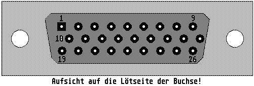

Previous
Next
TOC
Die Pinbelegung des DSP-Port am Falcon030
1 General Purpose 0
2 General Purpose 2
3 General Purpose 1
4 SDMA Play Data
5 SDMA Play Clock
6 SDMA Play Sync.
7 Not Connect
8 Ground
9 +12V
10 Ground
11 Sync Ser. I/F Ctrl 0
12 Sync Ser. I/F Ctrl 1
13 Sync Ser. I/F Ctrl 2
14 Ground
15 Sync. Serial Data In
16 Ground
17 +12V
18 Ground
19 SDMA Record Data
20 SDMA Record Clock
21 SDMA Record Sync.
22 DSP Interrupt
23 Sync Ser. I/F Data Out
24 Sync Serial I/F Clock
25 Ground
26 External Clock Input
Für die Taktrate 44.1KHz ist ein externer Takt von 22.5792MHz erfor-
derlich und für 48KHz ist ein externer Takt von 24.576 MHz erforder-
lich (beide Takte sind nicht im Falcon030 vorhanden!) der am Pin 26
(EXCLK) vom DSP-Port eingespeist werden muß und die verwendete Soft-
ware muß das natürlich unterstützen!

Kapitel Die Pinbelegung des DSP-Port am Falcon030, Seite 1